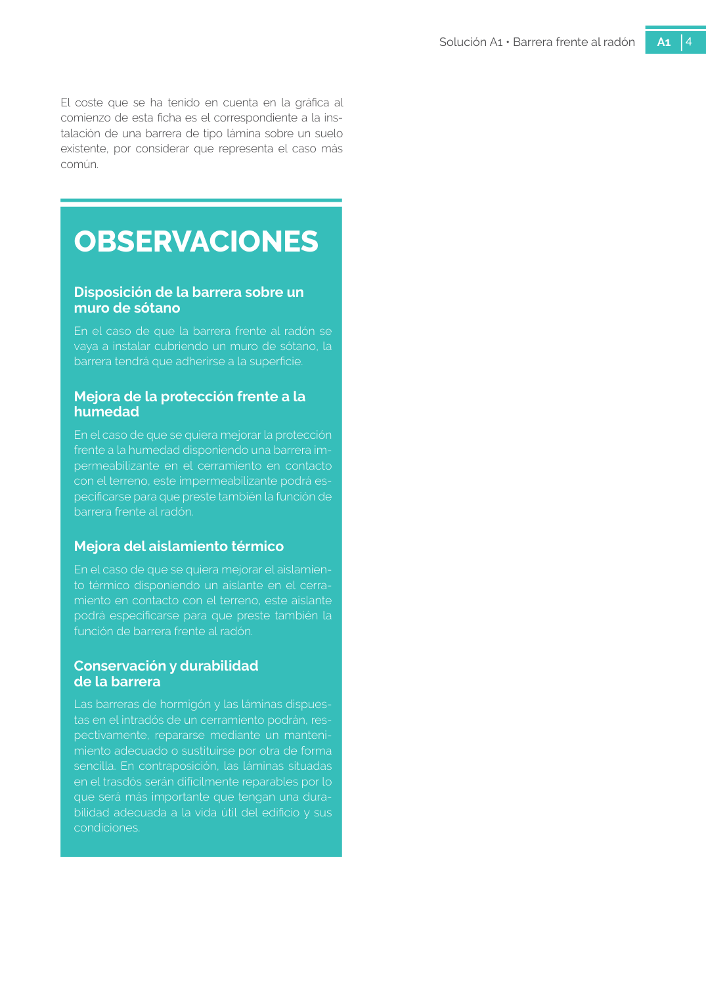

GUIA · 5 encuentro con pilar 6 encuentro con fachada · versión sin-fecha · capa guia
Formatos: JSON compacto · Markdown · PDF fuente
Ámbito del documento · texto del ámbito · documento y tablas
Tipo: tablas, figuras · nivel 1 · sección estimada: 5 encuentro con pilar 6 encuentro con fachada · padre:
5 encuentro con pilar 6 encuentro con fachada 6 encuentro con fachada 1 3 2 4 5 6 4 Solución A1 • Barrera frente al radón A1 4

PDF fuente redistribuible: copia fiel enlazada en esta página (SHA256 verificado).